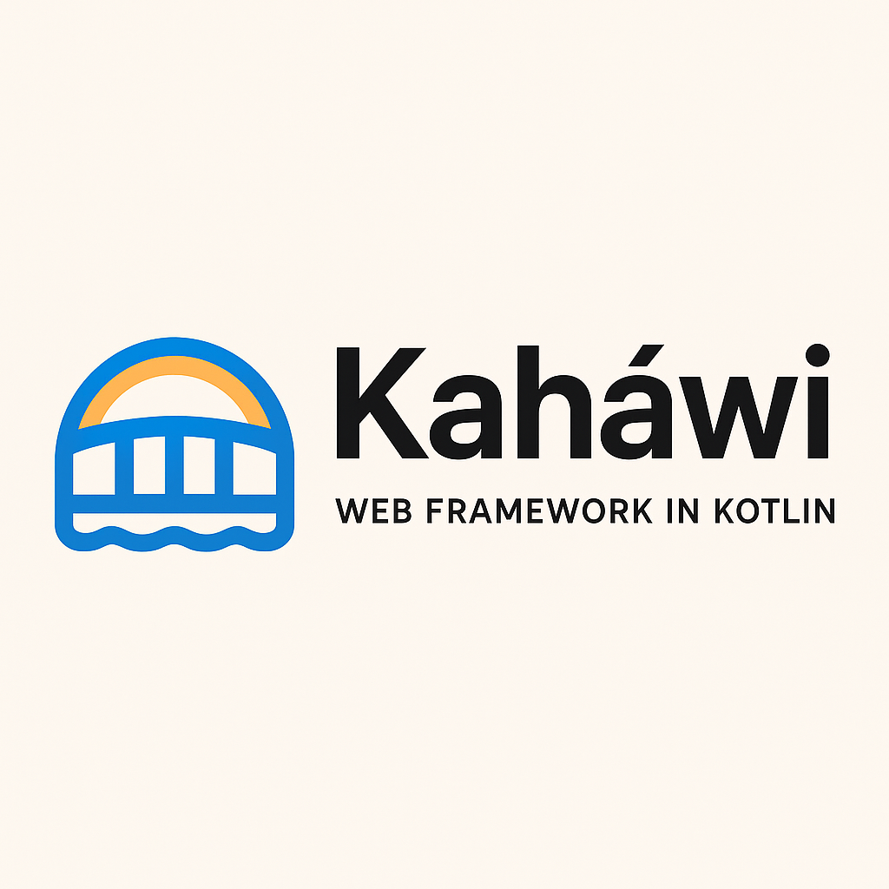

Kaháwi
Kaháwi — a lightweight web framework in Kotlin
A minimal, modern Kotlin-first web framework focused on fast startup, clear routing, and developer ergonomics. Built to bridge Kotlin idioms and web tooling with safety and speed.